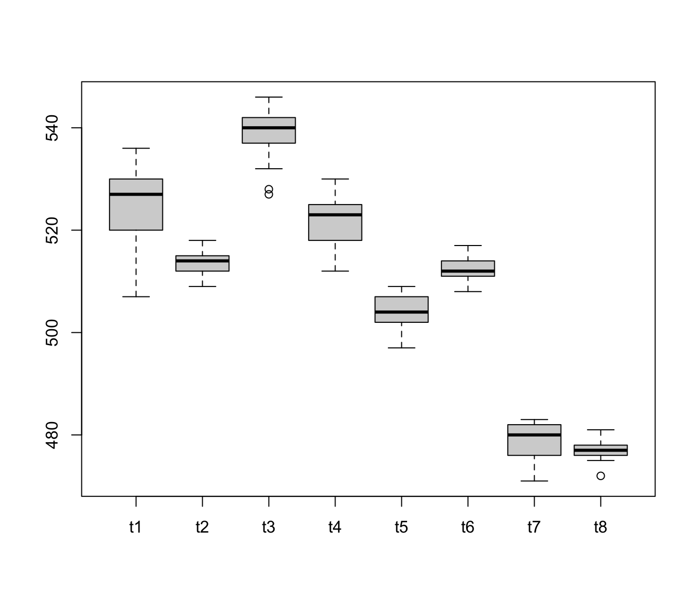

Boiler temperature data
boiler.RdTemperature readings from the eight configured burners on a boiler.
Usage
data(boiler)Format
A data frame with 25 observations on the following 8 variables:
- t1
temperature reading 1
- t2
temperature reading 2
- t3
temperature reading 3
- t4
temperature reading 4
- t5
temperature reading 5
- t6
temperature reading 6
- t7
temperature reading 7
- t8
temperature reading 8
References
Mason, R.L. and Young, J.C. (2002) Multivariate Statistical Process Control with Industrial Applications, SIAM, p. 86.
Examples
data(boiler)
describe(boiler)
#> Obs Mean StdDev Min Median Max
#> t1 25 525.0 7.348 507 527 536
#> t2 25 513.6 2.200 509 514 518
#> t3 25 538.9 4.795 527 540 546
#> t4 25 521.7 4.723 512 523 530
#> t5 25 503.8 3.379 497 504 509
#> t6 25 512.4 2.123 508 512 517
#> t7 25 478.7 3.410 471 480 483
#> t8 25 477.2 1.964 472 477 481
boxplot(boiler)
